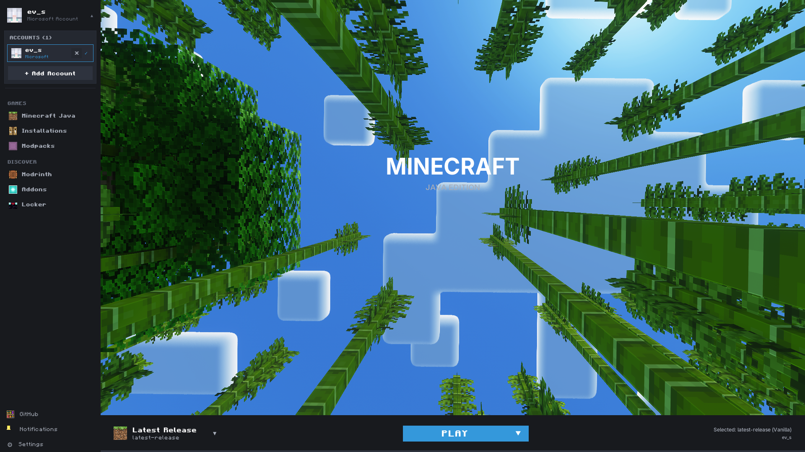
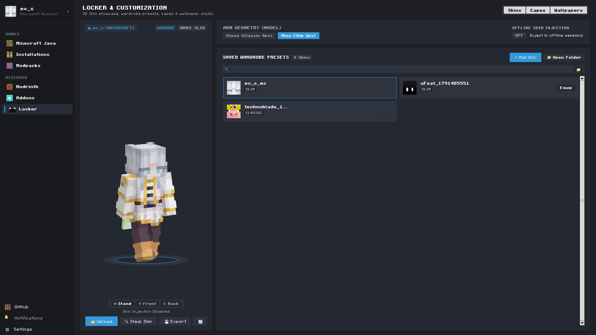
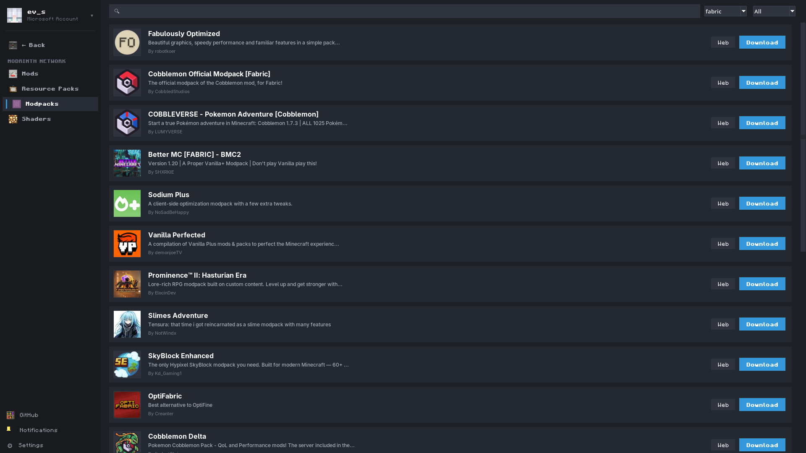
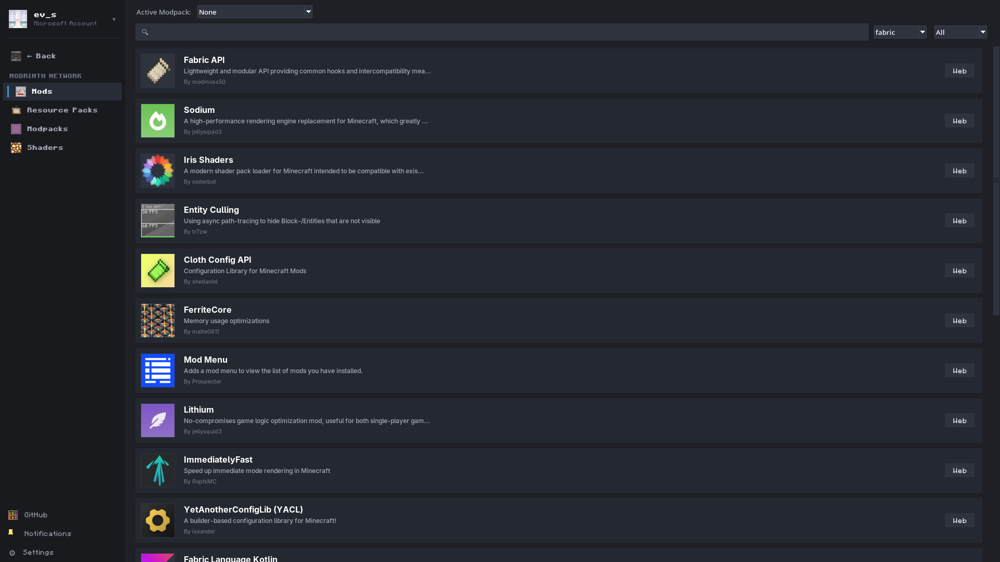

Blazing fast startup, zero telemetry, and a sleek Neo interface. Experience an interactive 3D skin locker, 1-click Modrinth modpacks, and offline skin injection out of the box.
Version 2.7 • 100% Free & Open Source • Zero Ads • No Bloat

Express yourself with complete control over your character's look. Inspect your skin in real time on an interactive 3D stage, manage wardrobe presets, and see your custom skin even in offline sessions.



Skip the hassle of visiting external sites and manually dragging `.jar` files into directories. Discover, download, and launch hundreds of community-loved modpacks directly from the Modrinth Network.
We benchmarked New Launcher against the Official Minecraft Launcher, Prism, SKlauncher, and TLauncher. Built for players who demand maximum performance, zero ads, and respect for their privacy.
| Feature / Metric | RECOMMENDED New Launcher (NLC) | Official Launcher | Prism Launcher | SKlauncher | TLauncher |
|---|---|---|---|---|---|
|
Startup Speed (Cold Launch)
Time from click to fully interactive UI
|
⚡ ~0.6s (Instant) | 5.5s - 8s | ~1.8s | ~3.2s | ~4.5s |
|
Idle Memory Footprint (RAM)
Baseline RAM consumed while idle in background
|
~48 MB | 350+ MB (CEF) | ~65 MB | ~180 MB | ~250 MB |
|
Modrinth 1-Click Discovery
In-app modpack & mod browser with auto-linking
|
✔ Built-in 1-Click | ✖ None | ✔ Supported | Partial | Limited |
|
3D Skin Locker & Presets
Interactive 3D model, pose controls, and preset cards
|
✔ Full 3D Studio | Basic 2D | ✖ None (External) | 2D Flat | Web-linked |
|
Offline Skin Injection
Local skin rendering without internet or auth servers
|
✔ Yes (Local) | ✖ Online Only | ✖ No | Online Auth | Skin Server |
|
Individual Mod ON/OFF Toggles
Disable specific mods without deleting files
|
✔ 1-Click Toggle | ✖ Manual Deletion | ✔ Yes | ✖ Manual | ✖ Manual |
|
Privacy & Telemetry
User tracking and background analytics
|
🛡️ Zero Trackers | Microsoft Telemetry | 🛡️ Clean | Basic Analytics | 🚨 Spyware Concerns |
|
Ad-Free Experience
Sponsored banners, popups, and injected promotions
|
🛡️ 100% Ad-Free | Marketplace Banners | 🛡️ 100% Ad-Free | Clean | 🚨 Heavy Ads & Popups |
|
Open Source Codebase
Transparent, auditable code maintained by community
|
✔ 100% Open Source | ✖ Proprietary | ✔ Open Source | ✖ Closed Source | ✖ Closed Source |
Starts up in less than a second. Smart background caching and a streamlined UI architecture guarantee immediate access to your games.
One-click loaders installation. No manual Java path guessing or dependency extraction—the launcher manages your environments automatically.
Support for Microsoft, Ely.by, and local offline skins. See your custom skin even when offline or disconnected from Mojang services.
Select custom wallpaper backgrounds, pick genuine Minecraft block icons for instances, and customize Discord Rich Presence to match your activity.
No telemetry, no analytics, no ad tracking. Your login tokens and configuration remain entirely local on your machine.
Full support for Windows and Linux (via portable AppImage). Equal features, performance, and polish across both platforms.